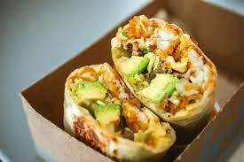

Breakfast Burrito

Description
A classic breakfast burrito featuring bacon as the main protein. This burrito has the classic fixin's of
potatoes, eggs and cheese. A special honey sriracha sauce will be added to give this dish a flavorful kick.
Ingredients
- Large Tortilla
- 3 Large Eggs
- 3 Slices of Bacon
- 1/2 Cup Cheddar Cheese
- 1 Hashbrown
- Quarter of Avocado
- 3 tbsp Sriracha
- 3 tbsp Honey
Steps
- Bake slices of bacon at 350 for 12 minutes.
- Saute hashbrown with oil for 5 minutes or until crispy.
- saute eggs with oil and cheese, for about 2 minutes.
- slice avocado.
- combine sriracha and honey.
- Assemble all ingredients.